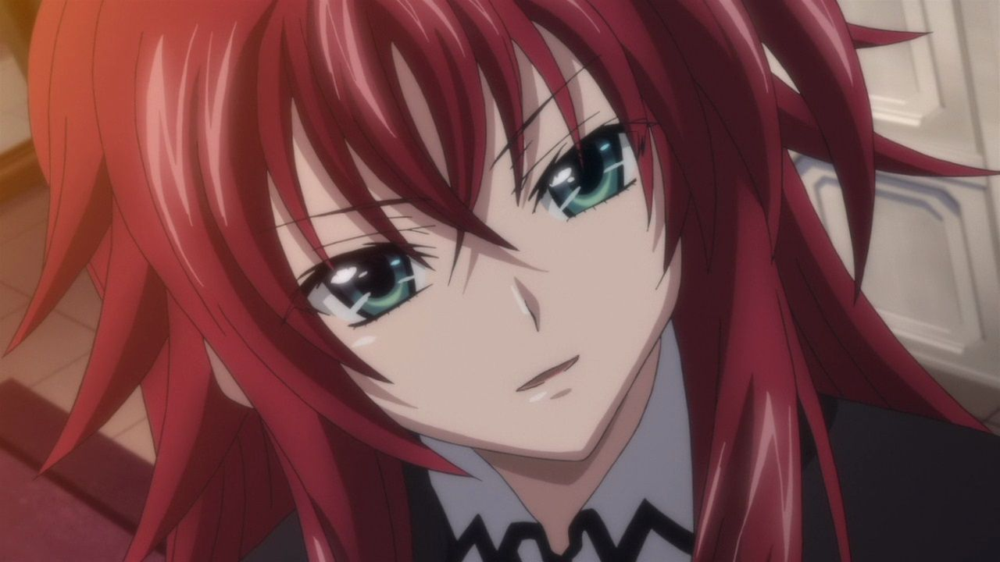

Rias Gremory
Rias gremory, devil princess, high school dxd, gremory clan, kuoh academy, riasu guremorī
Para saber Mais AcesseRias gremory, devil princess, high school dxd, gremory clan, kuoh academy, riasu guremorī
Para saber Mais AcesseIssei Hyodo (兵 藤 一 誠, Hyōdō Issei , Issei Hyoudou) é o personagem do ponto de vista e principal protagonista de High School DxD.
Para saber Mais AcesseAkenois Rias' closest friend, constantly being at her side after Rias saved her from being executed and...
Para saber Mais Acesse